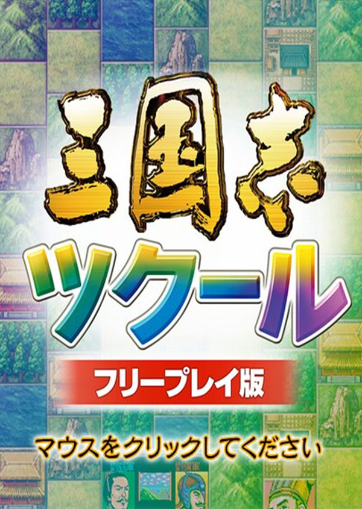

Romance of the Three Kingdoms Maker
Romance of the Three Kingdoms Maker
Details
|  | |
| Playtime | Not Played |
| Last Activity | Never |
| Added | 02/12/2022 9:35:48 |
| Modified | 18/05/2025 1:25:34 |
| Completion Status | Not Played |
| Library | Steam |
| Source | Steam |
| Platform | PC (Windows) |
| Release Date | 09/12/2015 |
| Community Score | 64 |
| Critic Score | |
| User Score | |
| Genre | Simulator Strategy |
| Developer | Koei Tecmo Games Co., Ltd. |
| Publisher | Koei Tecmo Games Co., Ltd. |
| Feature | Single Player |
| Links | Steam Official Website |
| Tag | Addictive Alternate History Diplomacy Grand Strategy Historical Immersive Sim Local Multiplayer Military Pixel Graphics Replay Value Resource Management Retro RPGMaker Simulation Strategy Tactical Turn-Based Strategy Turn-Based Tactics War Wargame |
Description
■ Characteristics of "Romance of the Three Kingdoms Maker"
(1) Based on the classic "Romance of the Three Kingdoms II," but with totally new graphics!
The historical simulation game system is based on the classic title "Romance of the Three Kingdoms II," but the user interface has been given a complete visual overhaul. While enjoying these great new visuals you can also enjoy the same simple and fast-paced game play.
(2) So many options for editing! Create your own unique scenario! (* the function available only for the full-edition owners)
A wide range of editing options are available, including officers' names, faces and parameters, countries, forces, rewards, battlefields and titles. Freely editing them all will even allow you to create a totally new world, far removed from the "Romance of the Three Kingdoms"! There are also a replete selection of support functions, such as auto creation of officer parameters or back story based on selected images.
As well as thousands of available images for officer faces, including those taken from the history of the "Romance of the Three Kingdoms" series, a function is also provided to easily add your own images to the game.
(3) If you just want to play rather than create, try the "Free Play Edition" for free! Packed with features for players to communicate with each other!
Edited original scenarios can be freely passed between players, and you can load and play any scenario created by another player. The "Free Play Edition" scheduled to be distributed for free alongside the full title can also load and play any scenario data.
The "Twitter Post Function" also allows any game screen to be easily captured, commented on and tweeted, promoting further communication and exchange between players.
(1) Based on the classic "Romance of the Three Kingdoms II," but with totally new graphics!
The historical simulation game system is based on the classic title "Romance of the Three Kingdoms II," but the user interface has been given a complete visual overhaul. While enjoying these great new visuals you can also enjoy the same simple and fast-paced game play.
(2) So many options for editing! Create your own unique scenario! (* the function available only for the full-edition owners)
A wide range of editing options are available, including officers' names, faces and parameters, countries, forces, rewards, battlefields and titles. Freely editing them all will even allow you to create a totally new world, far removed from the "Romance of the Three Kingdoms"! There are also a replete selection of support functions, such as auto creation of officer parameters or back story based on selected images.
As well as thousands of available images for officer faces, including those taken from the history of the "Romance of the Three Kingdoms" series, a function is also provided to easily add your own images to the game.
(3) If you just want to play rather than create, try the "Free Play Edition" for free! Packed with features for players to communicate with each other!
Edited original scenarios can be freely passed between players, and you can load and play any scenario created by another player. The "Free Play Edition" scheduled to be distributed for free alongside the full title can also load and play any scenario data.
The "Twitter Post Function" also allows any game screen to be easily captured, commented on and tweeted, promoting further communication and exchange between players.